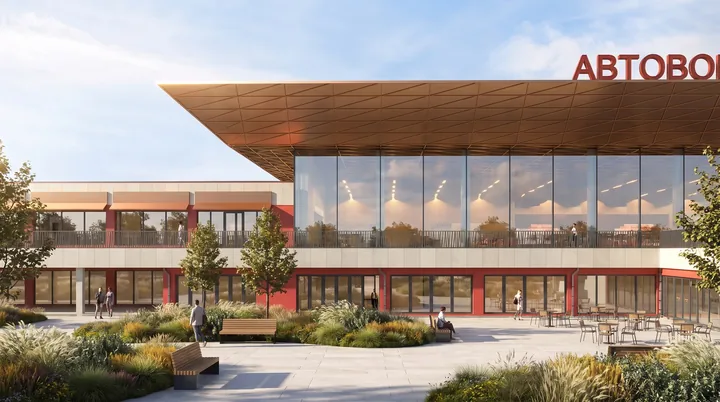
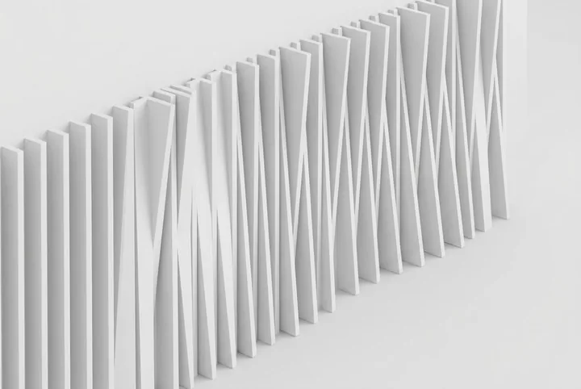
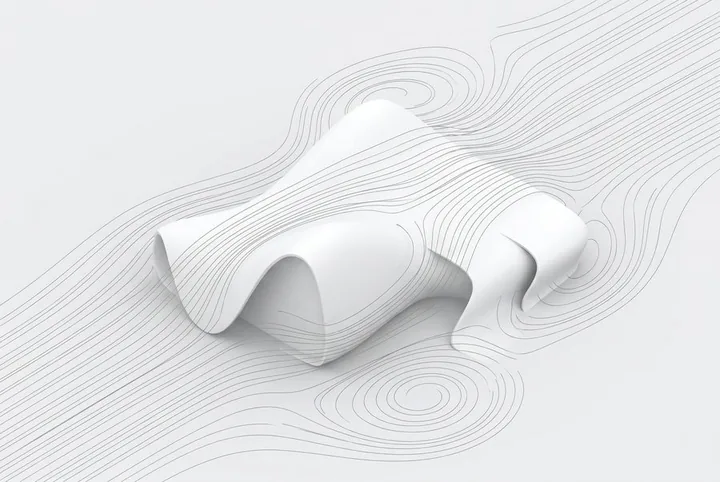
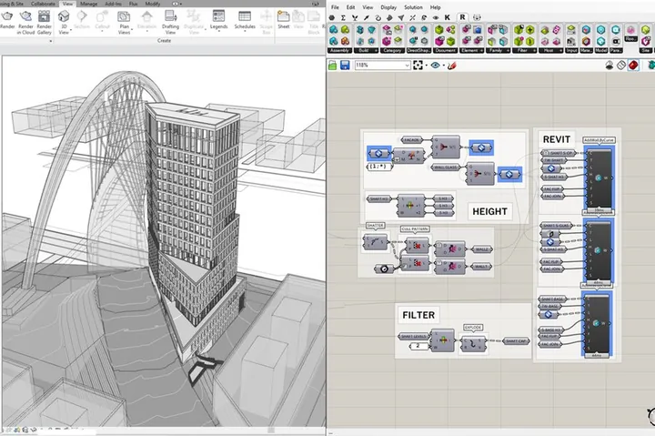
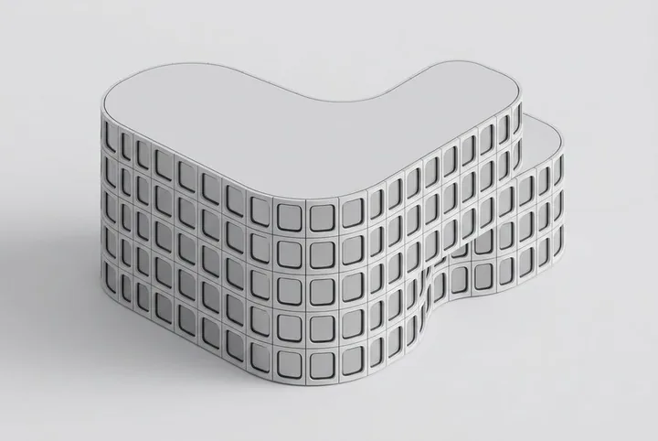

One script, from form to fabrication
A single Grasshopper definition that takes a triangulated copper-panel canopy from geometry straight to labeled, ready-to-cut sheets, for a bus station under construction in Bishkek.
Computational Design Architect
Grasshopper · C# · Python · Rhino.Inside.Revit · MCP
Trained as an architect, not a developer, which is why these systems solve real fabrication and layout problems instead of showing off code for its own sake. Five years at MARCHI, then a shift toward writing the tools rather than only using them: Grasshopper, C#, Python, whatever gets a real constraint solved.
Currently pairing that with a Master's in Applied Informatics, and open to computational-design roles across the EU. The roof got built; the packing engine, the crowd-flow plugin, and the Rhino-driving agent are what's next to prove out.
Nine systems, ranked by how real they are: what shipped, what's built, and what's still a study. Each page separates shipped work, built outcomes, and studies; unfinished documentation remains explicitly marked.
A rule-and-scenario library, exposed through the Model Context Protocol, that lets a language model place geometry, run solvers, and read back model state directly inside Rhino, no macros, no screen-scraping. Public on GitHub.

A custom C# packing engine for a triangulated canopy roof: an evolutionary search runs one packing strategy per CPU core, no-fit polygons built from Minkowski hulls keep panels from overlapping, and adjacent cut-cells stay paired so mating edges line up. It shipped. The roof is built.

A single Grasshopper definition that takes a triangulated copper-panel canopy from geometry straight to labeled, ready-to-cut sheets, for a bus station under construction in Bishkek.

A casting-feasibility checker that flags where a given alloy risks misrun before a mould is ever cut, run alongside the panel-nesting engine so fabricability gets checked at the same stage as geometry, not after.
An agent-based pedestrian-flow plugin for Grasshopper, released on Food4Rhino: anyone can install it and run their own crowd simulation, not just look at a rendered result.

A Grasshopper-to-Revit bridge that exports parametric façade panels as scheduled Revit families. Panel count, area and type survive the round trip instead of being redrawn by hand.
A daylight-driven massing optimizer that generates stepped, terraced forms directly from insolation constraints, not sculpted first and checked after.
A wind-comfort analysis tool built so architects can run it themselves, end to end, without waiting on the computational-design department.

A set of tessellation and paneling algorithms for freeform surfaces, each built around one real constraint (minimum panel count, node repetition, fabrication limits) and treated as an engineering problem, not a decoration.
Also built, not shown as headline work: a Grasshopper node-click heatmap for auditing design workflows, and a Telegram bot that collects tasks across architecture teams.